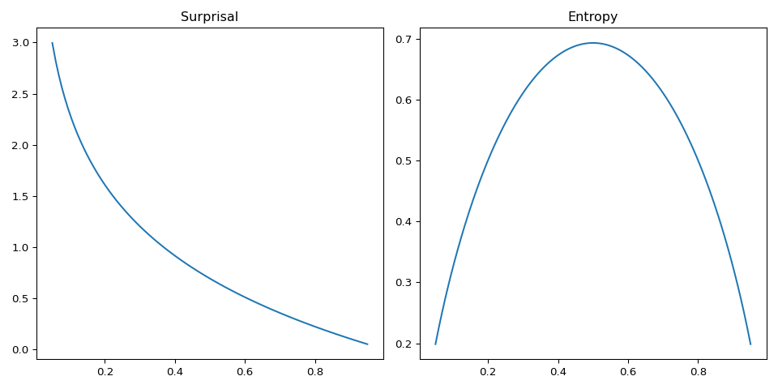
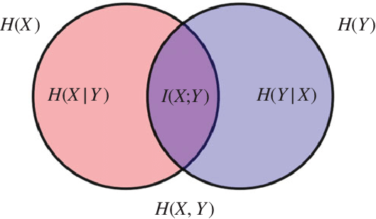

“You should call it entropy, because nobody knows what entropy really is, so in a debate you will always have the advantage.” John von Neumann
Introduction
I come from a physics background and my favourite field is by far statistical physics or condensed matter. The tldr on why, is that the arguments that the physicsists of the past came up with are surprisingly generalisable considering they were devised to describe particles in a gas or electrons populating discrete energy levels. The quote above is (allegedly) from a discussion between John von Neumann and Claude Shannon on what to call the new measure he had constructed to talk about information.
Seeing as I have exams in a few weeks, this serves as a nice opportunity to summarise some things I have learned about entropy now from an information theoretic perspective.
Boltzmann Entropy
Firstly, we’ll derive the standard Boltzmann or configurational entropy formula which gives us a feel for what this object looks like. We’ll be using the Stirling approximation for factorials:
\[ \begin{align} \ln N! \approx N \ln N - N \end{align} \]
The standard argument goes as follows. Suppose a system can only ever be in any one of \(M\) energy states or microstates. Each microstate corresponds to a physical configuration of particles in the system. Certain microstates may be more probable than others. If we take \(N\) observations of our system, we might find that the \(i^{th}\) microstate occurs \(N_i\) times. We can thus define some basic probabilistic quantities:
\[ \begin{align} E &= \frac{1}{N} \sum_{i=1}^{M} N_i E_i \\ N &= \sum_{i=1}^{M} N_i \end{align} \]
This describes a system which can be in \(M\) distinct microstates and we implicitly assume that \(N\) is large enough that we sample over all possible microstates. The total energy is a constant here as we assume the system to be in equilibrium with a reservoir - we can’t have a closed system otherwise there can be no fluctuations. Denote the \(n^{th}\) of N observations with the observed energy \(E^{(i)}_n\). Our sampling is represented by all strings \(E^{(i)}_1, E^{(i)}_2, E^{(j)}_3...\) where the the \(i^{th}\) energy appears \(N_i\) times. The size of this set is:
\[ \begin{align} \Omega(E) = \frac{N!}{\prod_{i=1}^{M} N_i !} \end{align} \]
Note that I write \(\Omega(E)\) as we are under a constraint on the total system energy. We now turn this into an optimisation problem with the objective of solving for the microstate multiplicities which maximise the likelihood of our sample (everything is an MLE if you really think about it…). To do this we maximise this configurational size \(\Omega(E)\) or as is often the case, its logarithm under constraint of total energy:
\[ \begin{align} \ln \Omega_{\lambda} &\approx N \ln N - N - \sum_{i=1}^{M} N_i \ln N_i + \sum_{i=1}^{M} N_i - \lambda (\frac{1}{N} \sum_{i=1}^{M} N_i E_i - E) \\ \frac{\partial \ln \Omega_{\lambda}}{\partial N_k} &= -\ln N_k -N - \lambda \frac{E_k}{N} = 0 \\ \end{align} \]
This gives a probability of the \(k^{th}\) microstate \(p_k = \frac{1}{Z} \exp(-\beta E_k)\) where the constant \(\beta\) subsumes any relevant multiplicative factor on energy. By some more physical and thermodynamic arguments, we can conclude that \(\beta = \frac{1}{k_B T}\) where \(k_B\) is the boltzmann factor. I won’t go into detail on these arguments but there are many useful stack exchange threads on the topic such as this one.
This normalisation factor \(Z = \sum_{k=1}^{M} \exp(-\beta E_k)\) is the canonical partition function which turns out to be enormously useful. That said, we still haven’t established what entropy is. This thing we call entropy is really just the log-likelihood we extremised to get here (up to a constant factor \(k_B\) so everything has the right physical units).
\[ \begin{align} S(E) &= k_B \ln \Omega(E) \\ &= k_B \Bigg[ \ln N! - \sum_{i=1}^{M} \ln N_i! \Bigg] \\ &\approx k_B \sum_{i=1}^{M} N_i (\ln N - \ln N_i) \\ &= -N k_B \sum_{i=1}^{M} \frac{N_i}{N} \ln \frac{N_i}{N} \\ &= -N k_B \sum_{i=1}^{M} p_i \ln p_i \end{align} \]
The constant order factors are less interesting, the salient point here is that entropy is really the expected negative log-likelihood of a system with \(i\) states each with probability \(p_i\). Now tying this back to thermodynamics, we know that systems with higher entropy are favoured by the \(2^{nd}\) law which now physically motivates our otherwise purely probabilistic thought process for the optimisation problem.
The Typical Set
Before tackling the information theoretic interpretation, I’m going to do things slightly in reverse to the standard order. The entropy is now, relatively clearly, a generalisable measure of expected negative log-likelihood. The object we extremised to get here was \(\Omega\) representing the total number of distinct strings compatible with our sample of the system. We concluded that \(\Omega = \exp(\frac{S}{k_B})\).
The typical set now appears. The typical set \(\mathcal{A}\) is the set of all strings of \(N\) observations in the limit \(N \to \infty\) which constitute almost all the probability mass. This is sometimes stated as the set of strings which are almost surely observed. We let \(X^N\) denote the string \(X_1, X_2, ... X_N\) of iid samples thus:
\[ \begin{align} \lim_{N \to \infty} \sum_{i \in \mathcal{A}} p(X^N_i) = \lim_{N \to \infty} \sum_{i \in \mathcal{A}} \prod_{k=1}^{N} p(X_k^{(i)})= 1 \end{align} \]
It is maybe obvious, maybe not, that all the elements in the typical set have equal probability so we can drop the index \(i\) denoting the \(i^{th}\) such element:
\[ \begin{align} \prod_{k=1}^{N} p(X_k) &= 1 / |\mathcal{A}| \\ \sum_{k=1}^{N} -\ln p(X_k) &= \ln |\mathcal{A}| \end{align} \]
Using the weak law of large numbers we have that \(\frac{1}{N} \sum_{k=1}^{N} -\ln p(X_k)\) converges in probability to the expected value of the negative log-likelihood \(\mathbb{E}_p[-\ln p(X)]\). Sticking with the strict boltzmann definition that \(S = -N k_B \sum_{i=1}^{M} p_i \ln p_i\) and rearranging:
\[ \begin{align} \ln |\mathcal{A}| &= N \mathbb{E}_p[-\ln p(X)] \\ &= S / k_B \\ |\mathcal{A}| &= \exp(\frac{S}{k_B}) \\ \end{align} \]
I think this is pretty neat. The optimal value of \(\Omega\) after extremising with respect to the multiplicites is the size of the typical set. This makes intuitive sense retrospectively. I want to highlight that I’ve not been quite so rigorous in these last few steps after invoking the law of large numbers. Many of these equalities are only true in terms of convergence in probability - the wikipedia page is quite good at covering this.
Information Entropy
Information theory presents some more pragmatic interpretations to some of these strange objects. The first is the notion of a surprisal or uncertainty function. If we have some distribution \(p(x)\) for \(x \in \mathcal{X}\) (some discrete alphabet of symbols \(\mathcal{X}\)), the less likely a symbol is, the more we should be surprised if we observe it in a random sample from the distribution. We also want that a symbol with probability \(1\) encodes no surprise at all and a symbol with probability \(0\) encodes infinite surprise.
Conveniently, the function satisfying this is \(h = \ln \frac{1}{p(x)}\) or \(-\ln p(x)\). The expected value of this surprisal is then our entropy which for reasons beyond my understanding is denoted \(H[X]\) in IT. A graphic example helps here so let’s take the biased coin with \(p(x_1) = p\) and \(p(x_2) = 1 - p\) which has entropy \(-p \ln p - (1-p)\ln(1-p)\). This should be familiar to physicists as the entropy of a binary mixture.

The incredibly convenient property about logarithms is their additivity. This means we can now sum surprisals and entropies. If we observe two independent events with probabilities \(p\) and \(q\), the surprisal is \(h(p) + h(q)\). Likewise for two independent random variables \(X\) and \(Y\) the total entropy is \(H[X] + H[Y]\). With this toolkit of entropy and typical set you can cover a remarkable amount of ground in coding theory. This post isn’t going to do that.
A final remark on this additivity property is how entropy lends a nice interpretation to conditional probability chain rules. Below are some examples:
\[ \begin{align} p(X, Y) &= p(X | Y)p(Y) \\ \text{ gives } H[X, Y] &= H[X | Y] + H[Y] = H[Y | X] + H[X] \\ \\ p(X, Y | Z) &= p(X | Y, Z)p(Y | Z) \\ \text{ gives } H[X, Y | Z] &= H[X | Y, Z] + H[Y | Z] \end{align} \]
Where the entropies are defined as:
\[ \begin{align} H[X, Y] &= \sum_{x \in \mathcal{X}}\sum_{y \in \mathcal{Y}} -p(x, y) \ln p(x, y) \\ H[X | Y] &= \sum_{y \in \mathcal{Y}} -p(y) \sum_{x \in \mathcal{X}} p(x | y) \ln p(x | y) \end{align} \]
Other Information Theoretic Measures
Having established the generality of entropy, we might ask what else we can do with it. Before that I want to present a diagram which I at first didn’t really get the point of at all but is actually a very good summary of the various forms of entropy when dealing with a bivariate distribution.

The way to read this diagram is:
- \(H[X | Y]\) is the left over uncertainty in \(X\) if \(Y\) is known - corresponds to \(X \cap Y^c\) (reverse argument for \(H[Y | X]\))
- \(H[X, Y]\) is the uncertainty in sampling both variables - corresponds to \(X \cup Y\)
- \(I(X ;Y)\) is the amount of uncertainty which \(X\) and \(Y\) share - corresponds to \(X \cap Y\)
This motivates the notion of mutual information which is this \(I(X; Y)\) (the ; represents symmetry in the arguments). We can actually assemble this object by inclusion-exclusion from the venn diagram:
\[ \begin{align} I(X; Y) &= H[X] + H[Y] - H[X, Y] \\ &= H[X] - H[X | Y] \\ &= H[Y] - H[Y | X] \end{align} \]
There are many interpretations of this object. The dominant one is that we can view a decrement in entropy as an increment in information (the converse of uncertainty is information). This is a useful view to take because with our understanding of entropy as a negative log-likelihood, many common optimisation problems commonly posed as maximising a product of likelihoods (maximise information) can be equivalently posed as minimising a sum of negative log-likelihoods or entropy (minimise uncertainty). The mutual information is then the information gained about \(X\) after learning \(Y\).
A different interpretation comes from the first formulation which is concretely:
\[ \begin{align} I(X; Y) = \sum_{x \in \mathcal{X}}\sum_{y \in \mathcal{Y}} p(x, y) \ln \frac{p(x, y)}{p(x)p(y)} \end{align} \]
To interpret this I’ll briefly need to introduce the KL-Divergence which we can think of as a measure of distance between two distributions. We write it as \(D_{KL}(p || q)\) and it satisfies \(D_{KL} \geq 0\) (Gibb’s inequality). The formula for the bivariate case is:
\[ \begin{align} D_{KL}(p(x, y) || q(x, y)) = \sum_{x \in \mathcal{X}}\sum_{y \in \mathcal{Y}} p(x, y) \ln \frac{p(x, y)}{q(x, y)} \end{align} \]
We generally view \(p\) as the ground truth distribution and \(q\) as some model distribution. The mutual information is then just \(D_{KL}(p(x, y) || p(x)p(y))\) and represents the deviation from independence displayed in the joint distribution. The property that \(D_{KL} \geq 0\) ensures that this mutual information cannot be negative. In other words, conditioning on something cannot decrease the information you know about your random variable of interest.
Application to Machine Learning
The big entropy related measure I’ve ommitted entirely here is the Cross-Entropy. I think to properly motivate the Cross-Entropy a study on logistic regression or source coding helps - another time. That said, the mutual information and KL-divergence come up all the time - unsurprisingly as most ML tasks boil down to maximising a sum of log-likelihoods.
Take a supervised learning scenario with dataset \(\mathcal{D} = \{x_i, y_i\}\). Our model will implicitly learn a distribution \(q(y | x, \theta)\) (where \(\theta\) is the set of model parameters). Letting the true underlying distribution be \(p(y | x)\) we have \(D_{KL}(p || q) \geq 0\) thus \(\mathbb{E}_p[\ln p] \geq \mathbb{E}_p[\ln q]\). Jumbling some algebra together we get:
\[ \begin{align} I(X; Y) &= H[Y] - H[Y | X] \\ &= H[Y] + \sum_{x \in \mathcal{X}} \sum_{y \in \mathcal{Y}} p(x, y) \ln p(x | y) \\ &= H[Y] + \mathbb{E}_{p(x,y)}[ \ln p(y | x)] \\ &\geq H[Y] + \mathbb{E}_{p(x,y)}[ \ln q(y | x, \theta)] \\ \end{align} \]
We should hope that a good model has objective of maximising the mutual information between features and labels and we can see that this optimisation is bounded by the true value.
Application to Statistics
If you do a lot of hypothesis testing you will be familiar with the Neyman-Pearson likelihood ratio:
\[ \begin{align} \Lambda = \frac{\sup_{\theta \in \Theta_1} p_{\theta}(x)}{\sup_{\theta \in \Theta_0} p_{\theta}(x)} \end{align} \]
(Note I am now using the frequentist notation for \(\theta\) where it is not a random variable)
Likelihood and ratio already point to something like a KL-divergence. The rest is really just the same old trick. Take the case of hypothesis testing for dependence. Formally
\[ \begin{align} \mathcal{H_0}: p_{\theta}(x, y) = f(x)g(y) \\ \mathcal{H_1}: p_{\theta}(x, y) \neq f(x)g(y) \\ \end{align} \]
If we take \(N\) iid samples from our distribution, we should look at the product of likelihood ratios…or its logarithm.
\[ \begin{align} \ln \Lambda &= \sum_{i=1}^{N} \ln p_{\theta_j}(x_i, y_i) - \ln p_{\theta_f}(x_i, y_i) \\ &= N \mathbb{E}_{p(x, y)}[ \ln p_{\theta_j}(x_i, y_i)] - N \mathbb{E}_{p(x, y)} [\ln p_{\theta_f}(x_i, y_i) ] \\ &\text{(in the weak law of large numbers limit)} \end{align} \]
(where I am writing the null hypothesis factorised distribution as \(p_{\theta_f}(x_i, y_i)\), the alternative hypothesis joint distribution as \(p_{\theta_j}(x_i, y_i)\) and the true underlying distribution as \(p(x, y)\))
Looking at each term of the expression in turn we have for the first term:
\[ \begin{align} \mathbb{E}_{p(x, y)}[ \ln p_{\theta_j}(x_i, y_i)] &= \mathbb{E}_{p(x, y)}[ \ln p_{\theta_j}(x_i, y_i) \frac{p(x, y)}{p(x, y)}] \\ &= -D_{KL}(p || p_{\theta_j}) - H[X, Y] \\ &= -H[X, Y] \\ \end{align} \]
(in the final line we take the extremal case where there does exist an optimal \(\theta_j\) which makes the joint distribution from the alternative hypothesis exactly match the true underlying)
For the second term:
\[ \begin{align} \mathbb{E}_{p(x, y)} [\ln p_{\theta_f}(x_i, y_i)] &= -D_{KL}(p(x) || p_{\theta_f}(x)) - D_{KL}(p(y) || p_{\theta_f}(y)) - H[X] - H[Y] \\ &= -H[X] - H[Y] \end{align} \]
(using a similar argument here for the extremal cases where the KL-divergence goes to zero)
Putting it together we get \(\ln \Lambda = N(H[X] + H[Y] - H[X, Y]) = N I(X; Y)\). This makes a lot of sense retrospectively. If our variables are in fact independent, we expect \(I = 0\) which corresponds to a likelihood ratio of \(1\) - insufficient evidence to reject the null. If our variables are dependent, we expect a large mutual information and likelihood ratio - reject the null. We also see that the log ratio is linear in \(N\) thus more samples will always increase the likelihood ratio.
The End
One thing I want to make clear is that what I’ve presented is very much the configurational interpretation of entropy. The strange thing about entropy in physics, is that it appears in conjunction with energies and other thermodynamic quantities. This can of course be derived as well, I’m just not going to do it here. David Tong’s lecture notes do this very well - here.